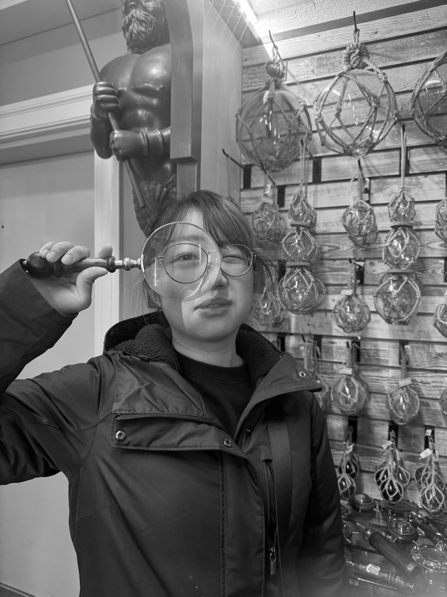

PORTFOLIO / RESUME
LEE YEN WEI
YULIA LEE — INDUSTRIAL DESIGNER

PROFILE
Yulia Lee is an industrial designer whose practice explores the relationship between people, technology, and everyday environments. She developed a multidisciplinary approach spanning product design, interaction design, visual communication, and digital media.
Her work moves between physical and digital experiences, from human-centered products and 3D prototypes to interactive applications, game environments, and immersive media.
Beyond product development, Lee has worked across graphic design, service design, and experience design, incorporating research into markets, communities, and living environments. Her projects have included collaborations with local businesses and cultural organizations in Taiwan, exploring how design can help reinterpret local traditions and connect them with contemporary audiences.
Her practice is also shaped by an interest in emerging technologies. She has explored AR/VR, game development, interactive installations, and digital interfaces as ways of creating new forms of storytelling and human interaction.
Currently based in New York, Lee continues to develop a practice that combines industrial design with interactive media, with an interest in creating experiences that are both culturally grounded and technologically forward-looking.
EDUCATION
2025 - Now / New York University
Integrated Design & Media (IDM)
Master's Program
2025 / Kyushu University
School of Design
Exchange Program
2021 - 2025 / National Cheng Kung University
Industrial Design
Bachelor's Degree
WORK EXPERIENCE
Graphic Deisgner / Freelance
| 2024 -
Worked for Farmer's Assiociation for graphics design,
Art work freelancer.
Design program / Intern
Akachen jewelry | 2023
Graphic design and Product/ jewelry design.